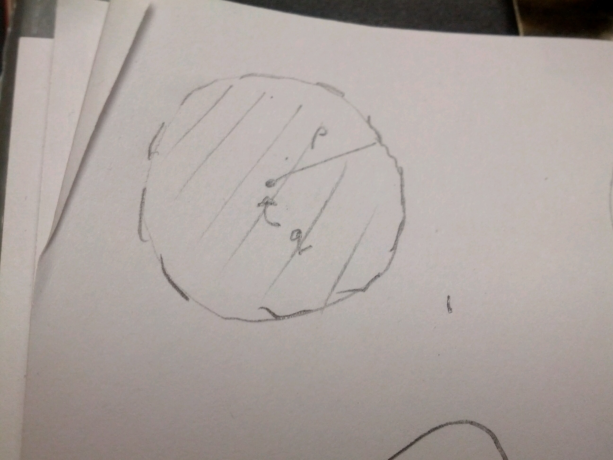
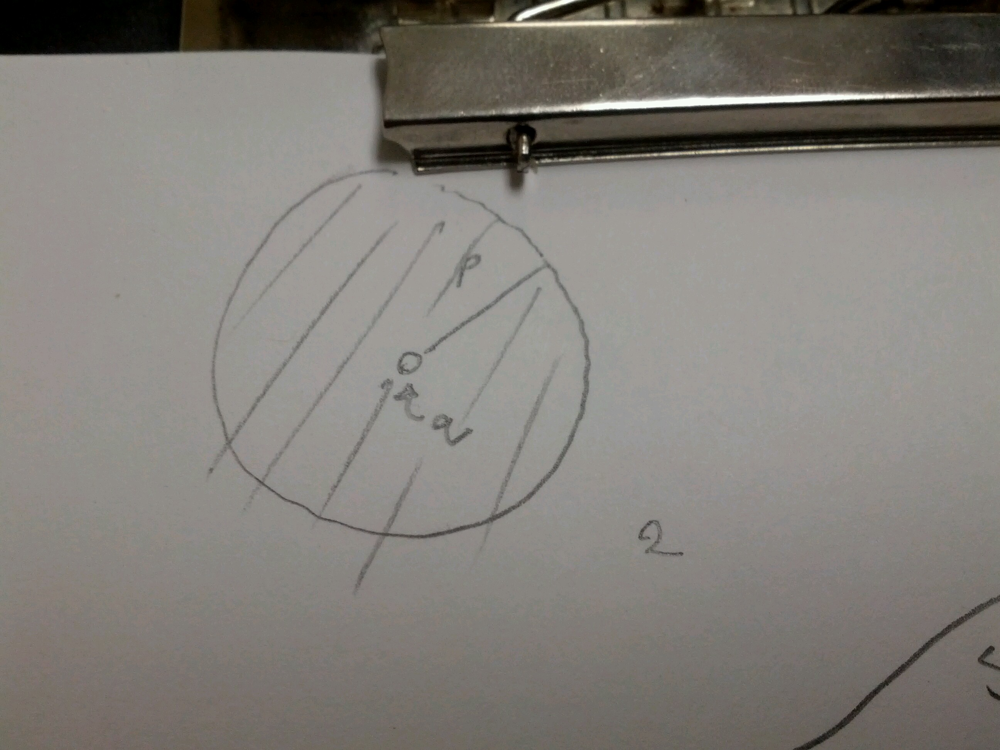
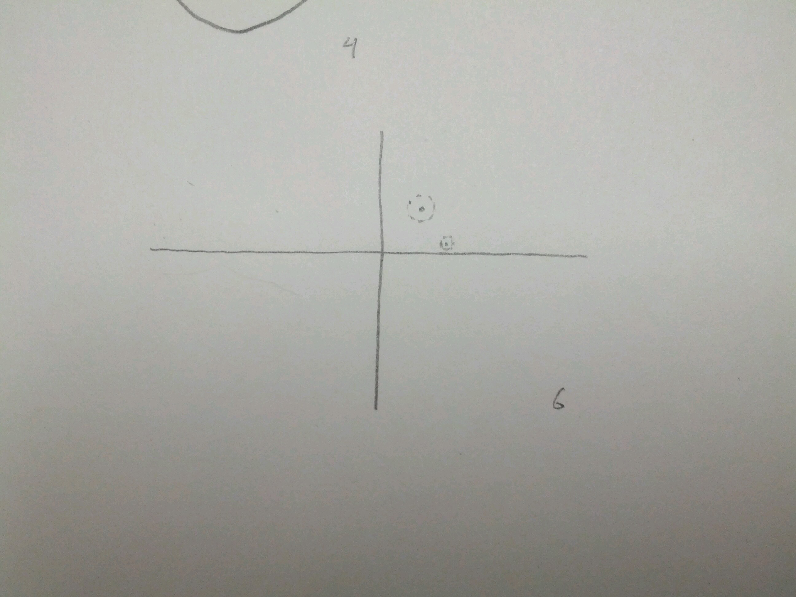
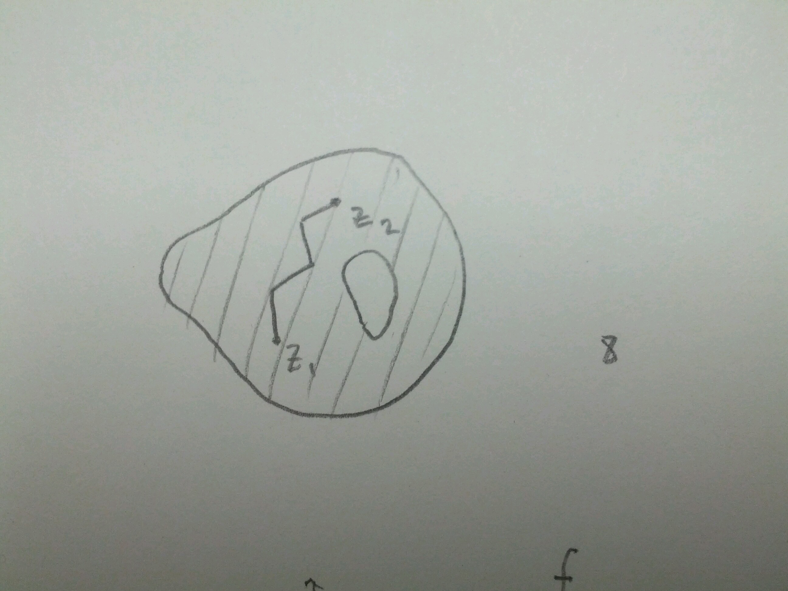
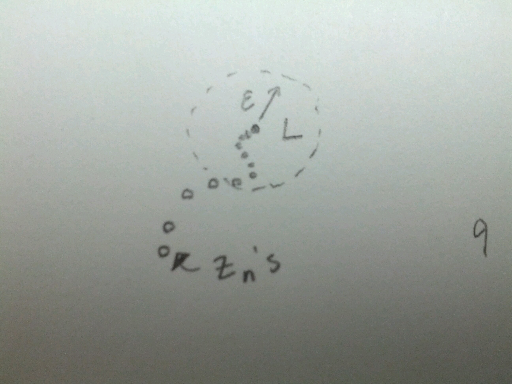

Limits and Continuity¶
Point-Set Topology¶
Let \(S \subseteq \Bbb C\), \(q \in \Bbb C\), \(\rho > 0\).
Let \(D_p(q) = \{x \in \Bbb C | |z-q| < \rho \}\).
In words, this is the disk centered at \(q\), radius \(\rho\).
And define \(D^*_p(q) = \{z \in \Bbb C | 0 < |z-q| < \rho \}\)
In words, this is the punctured disk centered at \(q\).
Definition
We say that a point \(z_0 \in S\) is in the interior of \(S\) if \(\exists \rho > 0\) such that \(D_p(z_0) \subset S\)

Definition
We say that a point \(z_0\) is a boundary point of \(S\) if \(\forall \rho > 0\), \(D_\rho(z_0) \cap S \neq \{\}\), \(D_\rho(z_0) \cap S^C \neq \{\}\).

Exterior point:

Definition
We say a set is open if (1) Every \(z_0 \in S\) is an interior point of \(S\), or, equivalently, (2) \(S\) contains no boundary points.
Roughly, if the set is defined by a strict inequality, then the set will be open.
Example
\(S = \{ z \in \Bbb C | 2 < |z| < 5\}\) is open.
Dotted lines are used in diagrams to show that the boundary is not included in the set. Conversely, closed lines mean boundary is included.
Definition
We say that a set is closed if (a) it contains all of its boundary points, or, equivalently, (b) its complement is open.
Roughly, if the inequality is not strict, the set is closed.
Is \(\Bbb R\) closed?
In the complex plane,
we can draw a neighbourhood around any point in \(\Bbb C - \Bbb R\) that does not touch the real axis. So \(\Bbb C - \Bbb R\) is open, and therefore, \(\Bbb R\) is closed.
Definition
A set \(S \subseteq \Bbb C\) is path connected if for every pair \(z_0, z_1 \in S\), there exists a continuous map \(\gamma: [0,1] \to S\) such that \(\gamma(0) = z_1\) and \(\gamma(1) = z_2\).
An open set is path-connected if for all \(z_1, z_2 \in S\), there is a sequence of line segments in \(S\) joining \(z_1\) and \(z_2\).
An open path-connected set in \(\Bbb C\) is called a domain. These are sets that are good for continuity, differentiability, and integration.
Limits¶
Definition
Convergence
We say that a sequence of points in \(\Bbb C\), \(\{z_n\} \subseteq \Bbb C\) of points in \(\Bbb C\) converges to a limit, \(L \in \Bbb C\), if \(\forall \epsilon > 0\), \(\exists N \in \Bbb N\), such that \(|z_n - L| < \epsilon\) for all \(n > N\).
We write: \(lim_{n \to \infty} z_n = L\); sequence is convergent.
This definition is very similar to convergence on the real line.
If \(f: S \subseteq \Bbb C \to \Bbb C\) and \(D_p^*(z_0) \subseteq S\), \(\rho > 0\), then we say \(lim_{z \to z_0} f(z) = L\) if \(\forall \epsilon > 0\), \(\exists \delta > 0\) such that \(|f(z) - L| < \epsilon\) if \(0 < |z - z_0| < \delta\).

Proposition 1:¶
A limit is unique if it exists.
Proof:
Assume \(lim_{z \to z_0} f(z) = a\) and \(lim_{z \to z_0} f(z) = b\).
Then, for all \(\epsilon > 0\), \(\exists \delta_1, \delta_2\) such that if \(0 < | z-z_0| < \delta_1\), then \(|f(z) - a| < \epsilon/2\).
And if \(0 < | z - z_0| < \delta_2\), \(|f(z) - b| < \epsilon/2\).
So let \(\delta = min(\delta_1, \delta_2)\). Then if \(0 < | z_0 - z| < \delta\) then \(|a-b| < |f(z) - a| + |f(z) -b | < \epsilon/2 + \epsilon/2 = \epsilon.\)